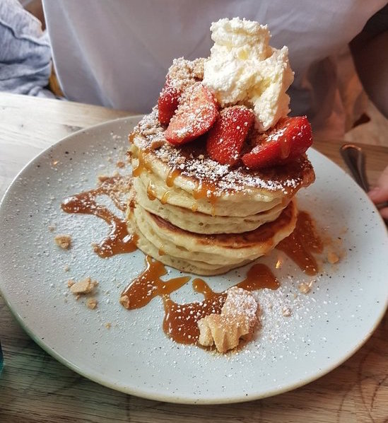

Located in the heart of the city centre on Saddler Street, its modern decor and twists on brnch classics makes it a Durham favourite. It is an absolute must for anyone visiting Durham!
The Riverview Kitchen is the hidden gem which has taken Durham by storm. True to its name, it boasts a stunning view of the river, perfect for those sunny Saturday mornings.
Leonard’s coffee house is located right by the river, in a more quiet area on Back Silver Street. Inside however, it is always buzzing with people, both locals and students. We promise that this place will not disappoint, whether you want a simple meal, or the full brunch experience!
Flat White Kitchen offers an impressive range of dishes from classics like Avocado on toast and Eggs Benedict to their speciality pancakes with a unique selection of toppings.
The Riverview menu boasts some excellent dishes such as a very classy full English breakfast (Veggie option included), with hashbrowns cooked to perfction. It is a tea-lover's paradise, with a selection of exotic loose teas, all with a certain purpose - from energising to detoxing - slipping some tea served in a delightful teapot seems like a blessful way to spend a Sunday morning.
At Leonard’s you will find everything your heart desires. Do you feel like eating pancakes? Maybe some delicious scrambled eggs on toast? They even have an impressive range of cakes for you to enjoy!
£££
££
£
Due to its popularity Flat White is notorious for its queue that goes outside the door... but trust me when I say it's worth the wait
If your get there at a reasonable time you will have no problem being seated - lucky you!!
This coffee house is not as busy as the other two, making it the perfect place to go if you simply cannot wait to enjoy a fine brunch!
Convinced? Here are the addresses to lead you to brunch H-E-A-V-E-N:
21A Elvet Bridge, Durham DH1 3AA
20-21 Silver St, Durham DH1 3RB
1 Back Silver St, Fowler's Yard, Durham DH1 3RA